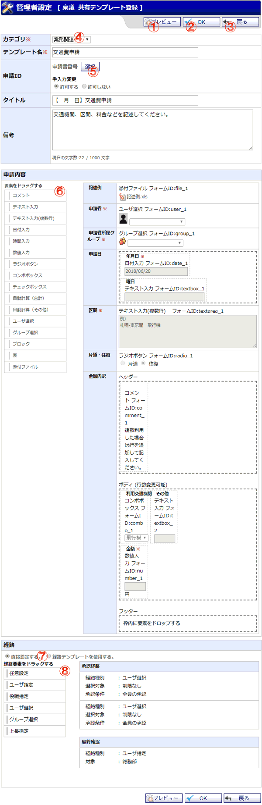

ユーザ全員で共有する稟議テンプレートを登録する画面です。

機能説明
プレビューボタンプレビュー画面をポップアップで表示します。表示される画面は、この共有テンプレートを稟議申請時に使用した場合の画面となります。 |
ＯＫボタン共有テンプレート登録確認画面へ遷移します。入力内容に不備がある場合エラーメッセージが表示されます。 |
戻るボタン遷移元の画面へ遷移します。 |
カテゴリコンボテンプレートの所属先カテゴリを選択します。 |
申請ID選択ボタン申請IDの使用方法が「テンプレート毎に設定する」の場合に表示します。 |
申請内容申請内容追加枠へ要素をドラッグ&ドロップすることで、稟議申請時に入力する内容を設定します。 |
経路設定方法選択ラジオボタンこのテンプレートで経路を設定するか、共有経路テンプレートを使用するかを選択します。 |
経路要素このテンプレートに直接経路を指定します。経路についての説明は共有経路テンプレート登録のページをご参照下さい。 |
表示・入力項目説明
テンプレート名
テンプレート名を入力します（100文字以内）。
タイトル
タイトルを入力します（100文字以内）。
申請内容：コメント
申請内容登録時にテキストを入力し、その内容を稟議に表示します。申請時にテキストの変更はできません。
申請内容：テキスト入力
テキストを入力します(100文字以内)。
申請内容：テキスト入力(複数行)
テキストを入力します(1000文字以内)。
申請内容：日付入力
日付を選択して入力します。日付の選択はカレンダーから行います。
申請内容：時間入力
時間を選択して入力します。時間の選択はピッカーから行います。
申請内容：数値入力
半角数字のみ入力可能です(9文字以内)。
申請内容：ラジオボタン
選択したラジオボタンの値を申請内容とします。
申請内容：チェックボックス
選択したチェックボックスの値を申請内容とします(複数選択可)。
申請内容：自動計算(合計)
対象の申請内容に入力された数値や任意の定数を合計した数値を算出します。
申請内容：自動計算(その他)
対象の申請内容に入力された数値や任意の定数を用いた四則演算を行い、その計算結果を算出します。
申請内容：ユーザ選択
選択したユーザの名前を申請内容とします。
申請内容：グループ選択
選択したグループの名前を申請内容とします。
申請内容：ブロック
申請内容追加枠を表示します。その中に追加された申請内容をまとめて、一行分の申請内容とします。
申請内容：表
申請内容追加枠を上部・中部・下部に分けて表示します。
それぞれの枠に申請内容を追加可能で、上部および下部の枠数は一つのみですが、中部の枠数はテンプレート登録時および稟議申請時に変更可能です。
申請内容：添付
稟議作成時にダウンロード可能なファイルを添付します。申請時にこのファイルが稟議に添付されることはありません。